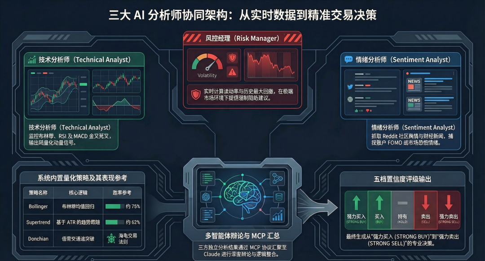

前言：传统盯盘的尽头是彻底“撒手”
说白了，传统的看盘方式早就该被淘汰了。你开着三四个网页，切着各个时间周期的K线，还要时刻盯着技术指标有没有金叉死叉，最后还要去各个论坛看看多空情绪。
这根本不是交易，这是在做毫无杠杆的体力活。
最近几天，有个开源项目在 GitHub 上悄悄杀进了 Trending 榜：tradingview-mcp。我起初也没当回事，以为又是个“套壳调API”的小玩具。但周末我硬是花了一下午时间，把它跑通并且接进了本地的 Claude Desktop，结果发现事情没那么简单。
这玩意儿简直是个降维打击的看盘外挂。它解决了我一个头疼了很久的问题：怎么让大模型不仅能跟我“聊天”，还能直接看懂实时盘面，甚至帮我把量化回测这件苦差事给干了。今天这篇，我不仅会把它的底层逻辑拆解清楚，还会把实操接入的代码直接给到大家。建议先收藏，周末自己跑一下。
一、这不是套壳，这是把量化外包给“数字臭皮匠”
简单来说，这是一个为大模型准备的 MCP 服务器。它把 TradingView 的实时数据和 30 多种技术指标打包成工具，让 AI 可以随时调用。
最离谱的是它的底层架构。当你问它“这只票能不能买”时，它不是跑个死公式敷衍你，而是会在后台拉起三个不同的人格开始“辩论”：
- 技术派（Technical Analyst）：死盯你的 MACD、RSI 和布林带极限值，计算动量；
- 情绪派（Sentiment Analyst）：疯狂抓取 Reddit 社区的散户情绪，结合路透社的 RSS 新闻，判断市场是不是在 FOMO；
- 风控派（Risk Manager）：实时监控波动率（Volatility）和历史最大回撤，随时准备给你亮红灯。

（图：三大 AI 分析师的底层协同逻辑）
三方博弈之后，它才会通过 MCP 协议汇总给 Claude，最终输出一个包含置信度的 STRONG BUY 到 STRONG SELL 评级。这种带交叉验证的思考过程，比绝大多数凭借直觉交易的散户强太多了。
二、硬核极客福音：6大回测与全维度数据源
以前如果你想测试一个策略，得去学 Pine Script 或者挠破头写 Python 脚本。现在呢？
你可以直接在对话框里打字：“帮我对比一下 BTC-USD 最近两年，这6种策略的表现”。系统会直接调用内置的回测引擎（包含了超级趋势 Supertrend、布林带均值回归、MACD、海龟突破等6种经典模型），并且给你抛出连滑点和手续费都算在内的机构级指标：
→ #1 Supertrend: +31.5% | 夏普比率: 2.1 | 胜率: 62%
→ #2 Bollinger: +18.3% | 夏普比率: 3.4 | 胜率: 75%
→ Buy & Hold(死拿): -5.0%
（图：内置的机构级分析与数据维度）
而且，它不仅限于加密货币，系统底层直接对接了 Yahoo Finance，美股（如 AAPL、NVDA）、ETF（SPY、QQQ）、甚至是传统外汇，都能无缝调用实时盘面，自动侦测 15 种以上的经典 K 线形态。
三、保姆级干货：5分钟接进 Claude Desktop
既然是开源项目，白嫖才是第一生产力。你不需要买一年三万美金的彭博终端，甚至连所谓的“第三方 API Key”都不需要提供。
你只需要在本地终端安装好 uv，然后打开你的 claude_desktop_config.json，把下面这段代码粘进去：
"mcpServers": {
"tradingview": {
"command": "uvx",
"args": ["tradingview-mcp-server"]
}
}
}
重启你的 Claude Desktop，对话框旁边那个带小锤子的图标就会亮起。你现在可以直接对它发号施令：“帮我扫描一下今天纳斯达克里，RSI 处于超卖区，并且 MACD 刚刚金叉的科技股”，它就会开始自动干活。
我个人的一点判断（为什么这是范式转移？）
你仔细品品这种工作流。
对于大机构来说，这可能是个玩具；但对于像我们这样的个人极客玩家，这就是实打实的降维打击。当你的对手还在手动切周期画支撑线时，你的赛博助理已经在一秒内把全网情绪、多周期共振和历史回撤全算完了。
说在最后
工具再强，AI 给出的结论终究也只是“分析”，真碰上黑天鹅，什么指标都会失效。但它改变的不是你每一次的绝对胜率，而是帮你省下了投入在交易里最宝贵的资源——你的时间和注意力。
本文由 AI 辅助创作，所有代码与操作源自作者真实跑通体验。
项目来源：GitHub (atilaahmettaner/tradingview-mcp)